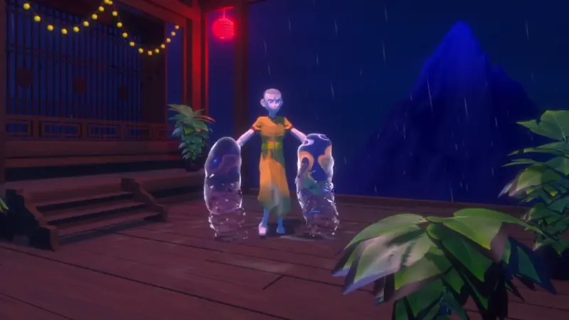
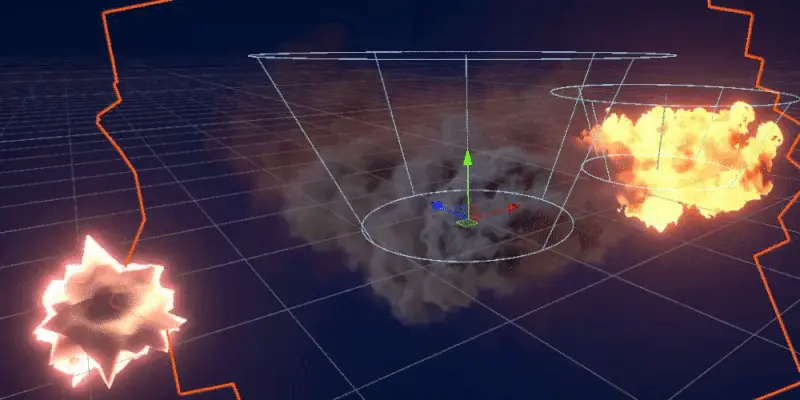
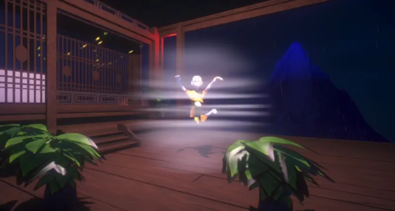

Water Element
Description 1

Environmental Effects and Soundscape
The rain and lightning effects were all created using Unity's particle systems. For the rain, it spawns a high rate of particles that simulate rain drops, and despite not being visible in the project, also spawns water rings on the surface upon collision with the ground. The lightning in the background is also a particle system that utilizes noise to create a random variation to a straight line that simulates lightning. Upon birth, the lightning lets off a bright light at the top, and upon impact it also generates a bright light as well as sparks flying off the ground. The clouds of ShaderBender were made to look like volume rendered clouds, despite only being a shader on a simple plane. It was made this way to limit the computational power required, as the clouds are not a main feature of the game. It works by passing over a simple noise map, with added effects and some subdivisions to the plane to make it look a bit more 3D. The mountain in the background was made using the Blender plugin A.N.T Landscape, and was created to somewhat resemble Mt. Fuji. For the post-processing, effects such as bloom, vignette and white balance were utilized to create a night time environment. Lastly, the soundscape of the experience was created utilizing sounds from FreeSound.org, that were then mixed together using the software Audacity.
Feature 3
Description 3
Motion Capture
Description 4

Fire Element
Description 5

Wind Element
Description 6